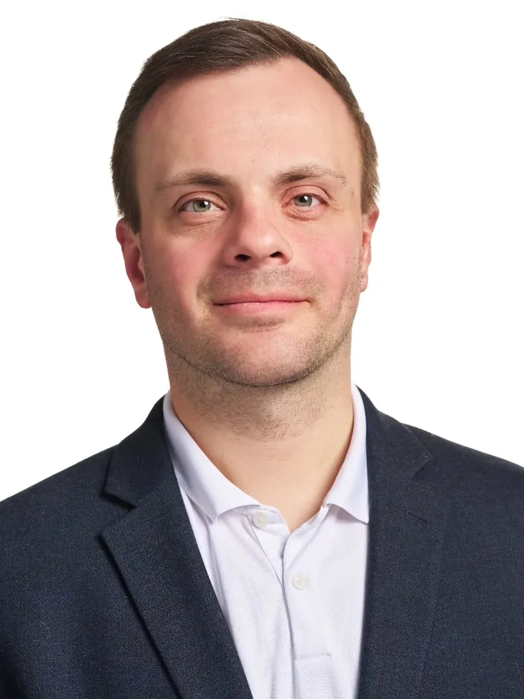
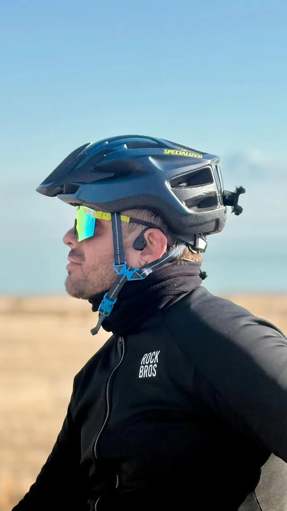
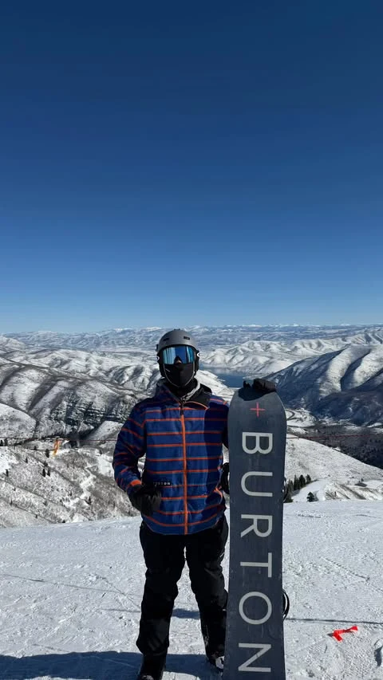
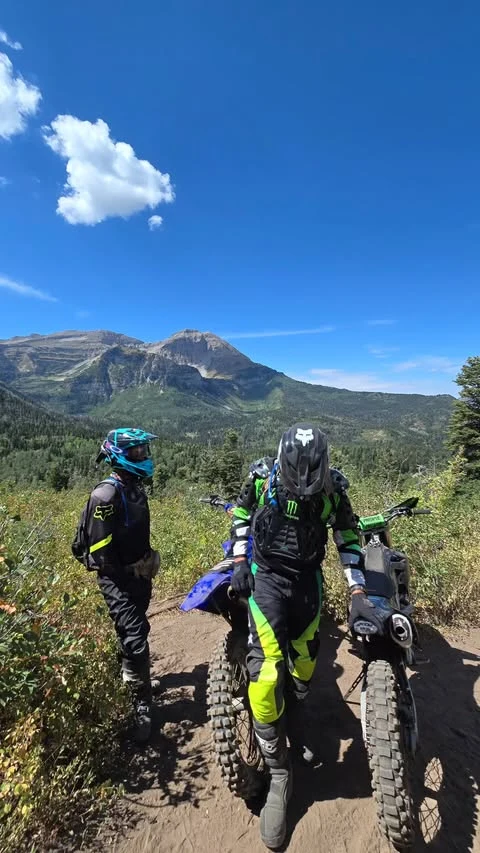
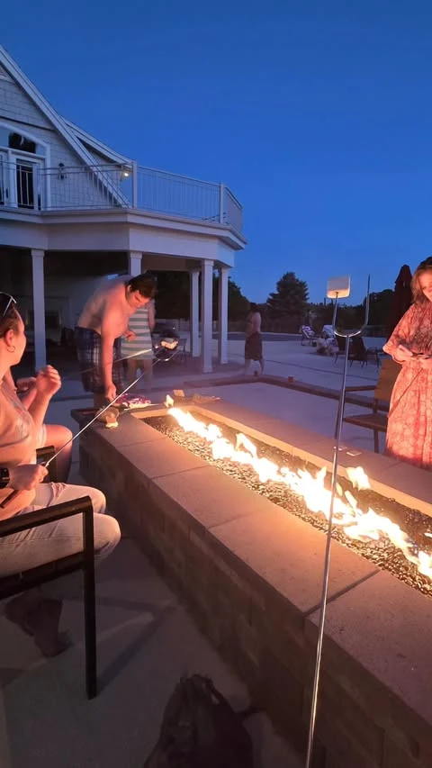

Software developer · BYU Marriott MBA
Lucas
Mayer.
Software developer and BYU Marriott MBA candidate.
I’m from Paraná, in southern Brazil, and now live in Utah. My background is in software engineering. At BYU Marriott, I’m adding strategy, market research, and a lot of team projects to the mix.
View projects
Selected work
Selected projects

Client project · 2021
Driving for Dollars
A mobile app for finding properties, tracking routes, and keeping leads in one place.
See the project
Personal project · In development
Northstar / AI Consultant Bot
A business analysis concept with financial dashboards, a data explorer, and evidence-based questions.
See the project
BYU MBA · Team course project
Lendio marketplace strategy
An analysis of lender and borrower interactions, with a focus on follow-up for unmatched borrowers.
See the projectBYU MBA · Team course project
Chips Ahoy! Chunky
A consumer growth strategy built around research, segmentation, and a clear sales target.
See the projectEducation & experience
About me
I studied software engineering at BYU–Idaho and have worked with mobile apps, web development, automation, and enterprise systems.
My MBA projects take me into a different part of the problem: who a product serves, how a market works, and whether a recommendation makes business sense.
View BYU MBA projects →Interests
Cycling & dirt biking
Snowboarding & churrasco
I’m from Paraná, in southern Brazil. Outside work and school, I enjoy cycling, snowboarding, dirt biking, and Brazilian churrasco with friends.




Grilling and churrasco have always been part of spending time with friends and family in southern Brazil.